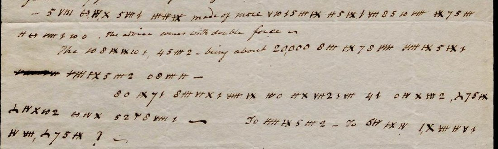

At a glanceCiphertext-only break · complete
- The letter
- Aaron Burr to his son-in-law Joseph Alston, New York, unsigned and undated, between 18 and 21 July 1804; to be sent under cover to Charles Biddle in Philadelphia. One page in clear with ten lines in cipher.
- Where
- Gilder Lehrman Collection, GLC01523. The Institute calls the cipher undecoded and counts two sheets of numbers as the letter’s second and third pages; those are a separate set of letters of 1808 in another cipher, with their own page.
- The cipher
- A simple substitution: figures for a to l, hatched groups of strokes for m to u (the Institute’s transcript writes them as Roman numerals II to X), and three odd signs for v, w and y. Words are divided, and clear words stand between.
- How it was read
- The key came from pattern words in the cipher itself (the, than, what, materials, in this state). Every sign was checked on the image; the Institute’s transcript drops two words the page has.
- What it says
- “If the inquest of murder be found, what would you advise – To stand – to go to Europe or what?” Burr counts “the little band”, about 20,000 in the state, as standing firm.
- Still open
- Nothing. One word, “pleant”, is one sign off “pliant”.
01 The letter
Hamilton died on 12 July 1804, the day after the duel. On 13 July Burr wrote to Joseph Alston, his daughter Theodosia’s husband, that the “malignant federalists or tories, and the imbittered Clintonians” were stirring up feeling against him; on 18 July that a coroner’s jury would sit that evening “the fourth time”, with the object “to obtain an inquest of murder”, and that Alston should write under cover to Charles Biddle in Philadelphia. Both letters are printed in Matthew L. Davis’s Memoirs of Aaron Burr (1837); this one is not.
It is unsigned and undated. The clear part reports that the jury “have adjourned over to Monday Eveg (23d.)”, that “The result will determine my Movements”, and that federalists and “The virulent Clintses.” are in perfect harmony: in their estimation Cheetham “is a gentleman and a soldier”. Then Burr thanks Alston for his letter of 20 June, “I concur fully with your opinions”, and goes into cipher. The foot of the page is directed “Enclose to Chs. Biddle, Phila” and addressed “J. Alston Esqr”. Burr left New York on 21 July; the jury returned “wilful murder” on 2 August.

02 The reading
Clear words in italics, as Burr left them; punctuation as on the page.
– as you are not made of more pl[e]ant materials than myself. The advice comes with double force –
The little band – being about 20,000 in this state [one word struck out] stand firm –
If the inquest of murder be found, what would you advise – To stand – To go to Europe or what? –
Burr is answering Alston’s letter of 20 June, written before the duel: Alston had evidently urged him to hold firm, and Burr says the advice comes with double force now. “The little band” is his following in New York, which he puts at about 20,000. The question is the one the coroner’s jury would decide eleven days later: if it found murder, should he stay and face trial, or leave for Europe? In the event he did neither. He went to Philadelphia, then to St. Simons Island in Georgia and to South Carolina, and was back presiding over the Senate in November; he was indicted for murder in New York and New Jersey and never tried.
03 The cipher
A simple substitution, one sign per letter, with the words kept apart. The key is built in runs:
| letters | signs |
|---|---|
| a b (c) d e f | 5 4 (3) 2 1 0, counting down |
| g h i | 6 7 8, counting up |
| l | 10 (written like “lo”) |
| m n o p q r s t u | hatched stroke groups numbered II to X in order |
| v w y | a hooked sign, a sign like λ, a barred circle |
c, j, k, x and z do not occur. The Gilder Lehrman transcript writes the stroke groups as Roman numerals, and that notation is kept here; on the page they are clusters of short strokes crossed by bars, IX and X with a cross. Twenty-one signs occur, 132 times in all.
04 How it was deciphered
- The cipher lines were transcribed from the Hamilton Education Program image (1200 × 1400 px) in two- and threefold crops, starting from the Gilder Lehrman transcript’s sign labels and checking each sign. In line 19 the image has two words the transcript leaves out (II X VII 2 1 VII · 4 1, “murder be”).
- Word division and 21 signs point to a simple substitution. Pattern words gave the key:
IX 7 1occurs as a three-letter word before a noun (the);IX 7 5 IIIafter a comparative (than);8 III IX 7 8 VIII VIII IX 5 IX 1after “being about 20,000” (in this state);II 5 IX 1 VII 8 5 10 VIIIafter “made of more …” (materials). - With those values every word reads, and the key’s structure (the runs above) holds for every sign.
- A statistical check (
docs/_validate.py, English letter model): the reading scores −1.90 per letter against −7.51 for 200 random keys of the same shape and −4.06 for keys refitted to shuffled text: a pass.
05 What remains uncertain
- pl[e]ant (V 10 1 5 III IX): the third sign is clearly the e-sign, so the letter gives “pleant”; “pliant” is meant or misspelt. Grade C.
- One word in line 18 is inked out by Burr and not read.
- Kline and Ryan’s Political Correspondence and Public Papers of Aaron Burr (1983) lists no letter to Alston in July 1804 in its contents; its annotation for July 1804 was not read and might mention this letter.
Full texts
The transcription and the decryption of every document on this page, so that the reading can be used and checked. Short files are shown here; all are in the repository.
GLC01523, Burr to Joseph Alston, New York, [c. 20 July 1804], clear page lines 15-21
Nine days after the duel with Hamilton, with a coroner's jury sitting to find 'an inquest of murder', Burr tells his son-in-law in cipher that 'the little band', about 20,000 in New York, will stand firm, and asks: if the inquest of murder is found, should he stand trial, go to Europe, or what?
Transcription
# GLC01523, img3 (GLC01523_Page_3.png): the clear page of the July 1804 letter, lines 15-21, in Burr's # stroke-and-figure cipher. Transcription (Claude, 5 Nov 2026) checked sign by sign against the image. # Sign labels follow the Gilder Lehrman transcript (Hamilton Education Program PDF, /media/611/download), which # writes the hatched stroke signs as Roman numerals; corrected where the image differs (marked *). # digits: 0 1 2 4 5 6 7 8, and "10" (written like "lo") # stroke signs: II III IV V VI VII VIII IX X (hatched groups of strokes; IX and X are crossed) # others: Y (a v-like hook), λ (a w-like sign), (-) (a barred circle) # Clear words in the cipher lines are in quotation marks. "|" separates words. # img3.15 - 5 VIII | (-) IV X | 5 VII 1 | III IV IX | "made of more" | V 10 1 5 III IX | II 5 IX 1 VII 8 5 10 VIII | IX 7 5 III img3.16 II (-) VIII 1 10 0 . "The advice comes with double force" - img3.17 "The" 10 8 IX IX 10 1 , | 4 5 III 2 - "being about 20,000" 8 III | IX 7 8 VIII | VIII IX 5 IX 1 img3.18 [struck: one word, heavily inked out] | VIII IX 5 III 2 | 0 8 VII II - img3.19 8 0 | IX 7 1 | 8 III VI X 1 VIII IX | IV 0 | II* X VII* 2 1 VII* | 4 1 | 0 IV X III 2 , | λ 7 5 IX img3.20 λ IV X 10 2 | (-) IV X | 5 2 Y 8 VIII 1 - "To" VIII IX 5 III 2 - "To" 6 IV | IX IV | 1, X VII IV V 1 img3.21 IV VII , | λ 7 5 IX ? - # * img3.19: the Gilder Lehrman transcript runs "IV 0 IV X III 2," and drops two groups; the image has # IV 0 | II X VII 2 1 VII | 4 1 | 0 IV X III 2 = "of murder be found".
Decryption
# GLC01523, img3 lines 15-21: reading of the stroke cipher line by line (key in key.tsv; transcription in transcription.txt; as sentences in reading.md) img3.15 - as you are not made of more pl[e]ant [= pliant?] materials than img3.16 myself. The advice comes with double force - img3.17 The little band - being about 20,000 in this state img3.18 [struck word] stand firm - img3.19 If the inquest of murder be found, what img3.20 would you advise - To stand - to go to Europe img3.21 or what? - Measured: 132 cipher signs, 132 read (100%). "pl[e]ant": the signs give "pleant"; "pliant" would need 8 for the third sign. The struck word in line 18 is Burr's deletion and is not counted.
Reading
# Burr to Joseph Alston, [c. 20 July] 1804: the cipher lines as sentences Clear words that stand between the cipher words are in italics. Line-by-line decryption: `decryption.txt`. - as you are not *made of more* pl[e]ant materials than myself. *The advice comes with double force.* *The* little band, *being about 20,000* in this state, [one word struck out] stand firm. If the inquest of murder be found, what would you advise? *To* stand? *To* go to Europe, or what? --- "pl[e]ant": the signs give "pleant"; "pliant" is meant or misspelt. Every cipher sign reads (132 of 132).
Key: key.tsv
06 Sources
- Gilder Lehrman Collection, GLC01523: catalogue record; page images and transcript on the Hamilton Education Program page (“The cyphered part of the letter has not yet been decoded”); Google Arts & Culture.
- Matthew L. Davis, Memoirs of Aaron Burr, vol. 2 (New York, 1837), letters to Alston of 13, 18 and 29 July 1804 (Project Gutenberg).
- Mary-Jo Kline and Joanne Wood Ryan, eds., Political Correspondence and Public Papers of Aaron Burr (Princeton, 1983): table of contents only (Internet Archive, lending copy).
- The number sheets filed with this letter: Burr to Theodosia, Baltimore, January–February 1808, a different cipher, with its own page.
Working files: targets/burr1804/ (transcription, key, reading, notes, work log).
Cite this page
Daniel Bourdeau, “Aaron Burr to Joseph Alston, July 1804”, Cyphersolver, posted 5 November 2026, https://cyphersolver.com/burr1804.html.